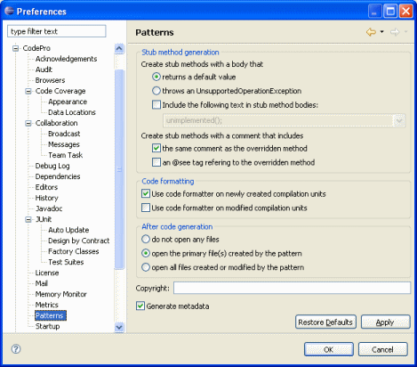

Preferences - Patterns This page is used to control various CodePro pattern code generation options. Create stub methods with a body thatThis preference determines whether generated methods return an appropriate default value (e.g., "0" for ints, "False" for booleans, "null" for objects, etc.) or throw an UnsupportedOperastionException. Include the following text in stub method bodiesThis option determines whether additional "marker" text is generated in each stub method. Default choices include:
Create stub methods with a comment that includes the same comment as the overridden methodThis option determines whether the comment of the stub method copies the comment of the abstract or interface method that it overrides. Create stub methods with a comment that includes an @see tag referring to the overridden methodThis option determines whether the comment of the stub method includes an @see tag referring to the overridden method. Use code formatter on newly created compilation unitsThis option controls whether newly generated compilation units will be formatted using the users formatting preferences. Use code formatter on modified compilation unitsThis option controls whether modified compilation units will be formatted using the users formatting preferences. CopyrightThis option controls the copyright text that will be generated into each generated class (at the end of the class comment). Generate metadataThis option determines whether pattern metadata is inserted in a comment at the end of each generated class. This metadata will be used to support a future "round-trip" pattern editing feature. If the metadata is not generated, the pattern wizard will not be able to re-edit and update that class. |